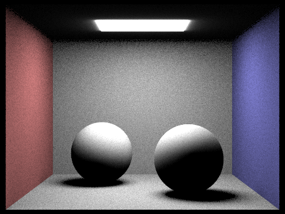

Use this section to write an overview of the assignment. All of the text in your write-up should be in your own words. If you need to add additional HTML features to this document, you can search the http://www.w3schools.com/ website for instructions. To edit the HTML, you can just copy and paste existing chunks and fill in the text and image file names appropriately.
If you are well-versed in web development, feel free to ditch this template and make a better looking page. Just make sure that you include all the components as we've laid them out here.
Part 1: Ray Generation and Intersection
Ray Generation
The ray generation part of the rendering pipeline starts off by sampling ns_aa number of rays at every pixel. Every ray starts at the camera and is directed from the camera to a position on the sensor. The camera is at a fixed location - the origin in camera space and at Camera->pos in the world space. The sensor is located along some predefined plane. At every given pixel, a ray is generated by:
- Sampling uniformly over a unit 2D grid and then adding the randomly sampled value to the pixel's coordinates to get the direction of the ray. Note that this sampled direction only has x and y components. The z component is computed in the next steps.
- The direction is then converted to normalized image coordinates by dividing the x-dimension by the width of the image W and dividing the y-dimension by the height of the image H.
- Then, the normalized image space direction is converted to camera space coordinates by (note that the z component of the direction is added here):
- x = (x-0.5)*(tan(hFov/2)*2.0)
- y = (y-0.5)*(tan(vFov/2)*2.0)
- z = -1 (the camera is looking down the -Z direction and the sensor is along the Z=-1 plane)
- Finally, the ray is transformed back to world space by first rotating it using the camera-to-world rotation matrix and then translating by the position of the camera in world space.
After generating a ray, we estimate its radiance. The Monte Carlo estimate of the integral of radiance over a given pixel is computed by averaging the estimated radiance along each ray sampled for that pixel.
Primitive Intersection
To estimate the radiance along each ray, we need to find intersections of the ray with scene primitives. In this part, we computed the intersection points of a ray with triangle and sphere primitives. If a ray hits a primitive, the intersection point and its distance from the ray's starting point (t-value) is returned along with other details about the primitive such as its type, BSDF and the surface normal at the point of intersection. For a ray, we are usually interested in its first intersection with any scene primitive since the light from this point is what is captured by the camera. Thus, when a ray intersects with a primitive, we update the "ending point" of the ray so as to keep track of the first intersection. Any intersection that is beyond the ending point is not considered a valid intersection.
Triangle Intersection Algorithm
We used the Moller-Trumbore intersection algorithm to find the intersection of a ray with a triangle. The algorithm computes the solution to the following equation:
o + t*d = (1 - b1 - b2)*p0 + b1*p1 + b2*p2
where o is the ray's starting point, d is the ray's direction, t is the distance of the intersection from o along d and p0, p1 and p2 are the vertices of the triangle. (1-b1-b2), b1 and b2 are the barycentric coordinates of the intersection point. Solving this equation for t, b1 and b2 gives us not only the intersection point but also the barycentric coordinates of the intersection. Analytically, the solution to this equation is:
t = (1 / (S1.E1)) * (S2.E2)
b1 = (1 / (S1.E1)) * (S1.S)
b2 = (1 / (S1.E1)) * (S2.d)
where,
E1 = p1 - p0
E2 = p2 - p0
S = o - p0
S1 = d x E2
S2 = S x E1
For an intersection to be valid, the t computed using the above equations must be >= 0 and <= to the distance from o to the ending point of the ray. Also, 0<=b1, b2, (1-b1-b2)<=1.
Images with Normal Shading
|
|

|
Part 2: Bounding Volume Hierarchy
In the second part of our project, we implemented a Bounding Volume Hierarchy (BVH). This is essentially a series of nested bounding boxes, which helps us avoid checking all primitives in a scene during ray tracing. In order to implement this, we first created a bounding box that contained all of the primitives. Then recursively, we used a heuristic to dispatch two child nodes (left and right) of our root to split the remaining primitives - we did this as evenly as possible.
What heuristic did we use? We settled on caclulating the average bounding box centroid for our elements, and using the difference in # of primitives as the heuristic. We calculated the split along all axes, and split the primitives along the most even one.
Here are a couple renderings of normal shading for a few large .dae files that we can only render with BVH acceleration (will take a long time otherwise!)
|
|
|
|
The logarithimic runtime of using BVH is evident in the results of rendering times on a few scenes with moderately complex geometries with and without BVH acceleration. The banana.dae file had 2458 primitives and took 30.39 seconds without BVH, and took 0.1639 seconds with BVH. Similarly, the cow.dae file had 5856 primitives took 83.23 seconds without BVH, and took an average of 0.2056 seconds with BVH. Furthermore, larger images take significantly longer to render without BVH to the point where it's infeasable to not use it.
|
|

|
Part 3: Direct Illumination
In Part 1, we saw that the Monte Carlo estimate of the integral of radiance over a given pixel is computed by averaging the estimated radiance along each ray sampled for that pixel. Furthermore, the estimated radiance along a ray is computed as the light coming from the intersection point of the ray with the scene. In this part, we implemented two ways to compute this light coming from the intersection as a function of the irradiance at the intersection (i.e. light received by that point from various sources). We limit ourselves at this stage to computing zero and one bounce radiance from the intersection.Direct Lighting with Uniform Hemisphere Sampling
One way to compute the irradiance at a point is to uniformly randomly sample rays over the hemisphere centered at the point and projecting outward in the direction of the surface normal. We then compute the intersection of these rays with other primitives in the scene and aggregate the light coming from these intersections. The steps followed are summarized below:
- Sample an outward direction w_in from a unit hemisphere in object space.
- Transform the direction w_in to world space by multiplying it with the object-to-world transformation matrix.
- Construct a ray starting at the point in the direction of w_in.
- Find the intersection of this ray with the scene.
- If there is an intersection, compute the emission coming from the light source located at that intersection.
- Repeat the above steps multiple times.
Once we have the emission values computed using multiple sampled directions, we can get the Monte Carlo estimate of the radiance along the original ray coming from the camera using the reflection equation:
where N is the number of samples, p is the intersection point of the camera ray with the scene, w_j is the randomly sampled direction from p, w_r is the direction from p to the camera, theta_j is the angle between w_j and the surface normal, f_r(p, w_j to w_r) is the BSDF value at p when the incoming light direction at p is w_j and the outgoing light direction is w_r (both in object space and both directed outward from the surface by convention), L_i(p, w_j) is the emission value of the light source located at the intersection of the ray from p in the direction of w_j with the scene and p(w_j) is the probability of sampling the direction w_j. Since we use uniform hemisphere sampling here, p(w_j) = 1/(2*PI).
Direct Lighting by Importance Sampling Lights
The results obtained using uniform hemisphere sampling can be noisy and we need a large number of samples to get a good Monte Carlo estimate. These problems can be alleviated using importance sampling. We know that the only directions which will have non-zero emission values are the ones directed at light sources. Thus, we can restrict our samples to be drawn from only these directions instead of all possible directions. This weighting of directions during sampling based on "importance" is called importance sampling. We follow the steps below to get emission values:
-
This is done for every light source in the scene:
- Sample a direction leading from the point to the light source.
- Construct a ray starting at the point in the sampled direction.
- Find the intersection of this ray with the scene. If there is no intersection, that means that light from the source is directly hitting the point and thus contributes to the irradiance at the point. If there is an intersection, there is some primitive that blocks the light and thus this direction does not bring in any irradiance.
- Provided there was no intersection, compute the emission coming from the light source at the end of the ray.
- Repeat the above steps multiple times (unless the light source is a point source, in which case only one sample is sufficient by definition).
Once we have the emission values computed using multiple sampled directions, we can get the Monte Carlo estimate of the radiance along the original ray coming from the camera using the reflection equation mentioned above. Since we used importance sampling, p(w_j) would change to the value of the PDF for w_j.
Comparing Uniform Hemisphere Sampling and Lighting Sampling using example images
The images below show examples obtained using both sampling techniques (all parameters held constant except for sampling technique used). From the images, it is very clear that lighting sampling produces images with significantly lower noise. This is because of the rays sampled using lighting sampling actually contributing to the radiance estimate unlike random rays which may not always be directed towards a light source. As a result, lighting sampling is more sample efficient, requiring fewer samples to achieve the same level of rendering quality (or equivalently, achieving much better quality using the same number of samples). The time required for rendering scenes using lighting sampling was also much lower (for example, uniform sampling took about 75s while lighting sampling look about 51s to render CBbunny.dae). This is because lighting sampling is more efficient, requiring fewer primitive intersections to be tested, since any object that is farther away than the light source need not be tested for intersections.

|
|
|

|
|
Comparison of noise levels in soft shadows with lighting sampling using different number of rays
The images below illustrate the effects on noise levels in soft shadows when different number of rays are used for lighting sampling. As we use more light rays, the noise decreases and the soft shadows become more accurate.|
|
|
|
|

|
Part 5: Adaptive Sampling
In the fifth part of our project, we implemented adaptive sampling. The premise behind this is that Monte Carlo path tracing results in a lot of noise, which can be eliminated by increasing the number of samples per pixel. Since this is computationally expensive and takes time, we can speed up the process by concentrating our samples on areas that converge slower and quitting early when we encounter areas that converge faster.
We implemented this by defining a variable I to be 1.96 * sqrt(sigma^2 / n). We then compare the value I to mu * maxTolerance in order to determine if a pixel has converged. As described in the project description, these values can be computed more efficiently by storing a running sum of the illuminance values (and a running sum of the squares of these illuminance values). And to avoid repeated computation, we only do this check once every `sampleCountBuffer` times.
Here is the rendering for bunny.dae scene with adaptive sampling. The parameters we used were 2048 samples per pixel, 1 sample per light, and a max ray depth of 5.
|
|
|
|
A Few Notes On Webpages
Here are a few problems students have encountered in the past. You will probably encounter these problems at some point, so don't wait until right before the deadline to check that everything is working. Test your website on the instructional machines early!
- Your main report page should be called index.html.
- Be sure to include and turn in all of the other files (such as images) that are linked in your report!
- Use only relative paths to files, such as
"./images/image.jpg"
Do NOT use absolute paths, such as"/Users/student/Desktop/image.jpg"
- Pay close attention to your filename extensions. Remember that on UNIX systems (such as the instructional machines), capitalization matters.
.png != .jpeg != .jpg != .JPG
- Be sure to adjust the permissions on your files so that they are world readable. For more information on this please see this tutorial: http://www.grymoire.com/Unix/Permissions.html
- And again, test your website on the instructional machines early!